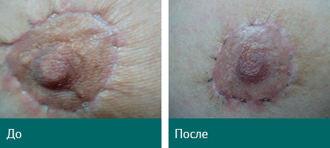
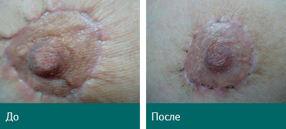

REVIXAN-BEAUTY и REVIXAN DUO LIGHT –
комплекс препаратов, специализированного оборудования и технологий для терапии трудноизлечимых и социально значимых заболеваний в дерматологии и косметологии, помощь в решении проблем пластической хирургии методом фотодинамической терапии.
9 причин выбрать технологию REVIXAN:
1. АКТИВАЦИЯ СИНТЕЗА КОЛЛАГЕНА и ЭЛАСТИНА. Репаративная регенерация кожи при хроностарении, нормализация естественных обменных процессов и механизмов деления клеток кожи, мобилизация собственных ресурсов организма. Активация роста молодых и здоровых клеточных структур.
2.ШИРОКАЯ ОБЛАСТЬ ПРИМЕНЕНИЯ в дермато-косметологии:
- Выравнивает рельеф кожи и улучшает его цвет
- Разглаживает морщины и устраняет пастозность
- Повышает тургор кожи и выравнивает овал лица
- Обеспечивает быстрое ранозаживление
и естественное восстановление тканей после
хирургических вмешательств - Позволяет проводить эффективную профилактику
и терапию вирусных и бактериальных заболеваний кожи
(акне, постакне, герпес), оказывает иммуномодулирующий
эффект. - Может использоваться для экспресс-диагностики
злокачественных новообразований кожи. - Подходит для женщин и мужчин любого
возраста с любым типом кожи
3. ЭФФЕКТ CИНЕРГИИ в сочетании с другими косметологическими процедурами –
в качестве подготовки к инвазивным
процедурам, а также после этих процедур для
быстрого восстановления тканей
и ранозаживления.

REVIXAN DUO LIGHT– уникальный аппарат для фотодинамических процедур.
Область приминения
- Косметология
- Дерматология
- Дерматоонкология
- Антимикробная ФДТ
- Флуоресцентная диагностика
злокачественных новообразований
4. НЕИНВАЗИВНОСТЬ и ИЗБИРАТЕЛЬНОСТЬ ВОЗДЕЙСТВИЯ – отсутствие повреждения здоровых тканей.
5. ОТСУТСТВИЕ БОЛЕВЫХ ОЩУЩЕНИЙ и ПОБОЧНЫХ ЭФФЕКТОВ – без болевых ощущений во время процедуры, отсутствие периода реабилитации после процедуры.
6. ДЛИТЕЛЬНЫЙ и ВИДИМЫЙ ЭФФЕКТ – клинические наблюдения длятся более 2 –х лет.
7. ДОКАЗАННАЯ ЭФФЕКТИВНОСТЬ ПРИМЕНЕНИЯ – с помощью современных методов доказательной медицины совместно с ведущими медицинскими и исследовательскими центрами нашей страны.
8. ВЫСОКАЯ ЭКОНОМИЧЕСКАЯ ЭФФЕКТИВНОСТЬ – возврат инвестиций в покупку аппаратного комплекса REVIXAN DUO LIGHT в течение 4 месяцев.
9. ГИБКИЕ УСЛОВИЯ - возможность приобрести REVIXAN DUO LIGHT в рассрочку или взять в аренду.


 
